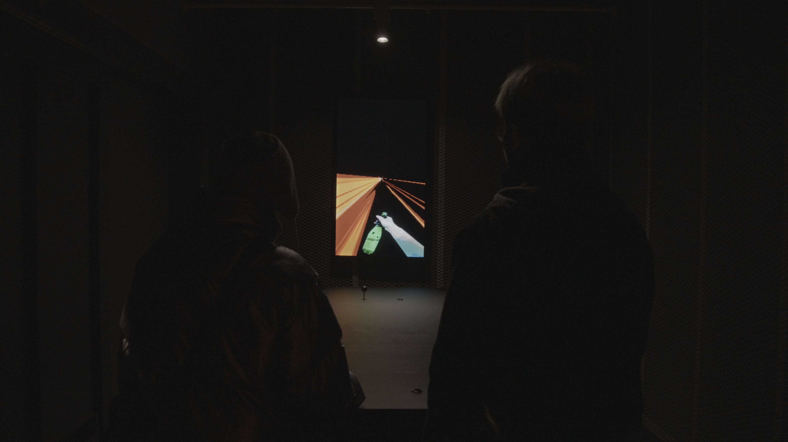
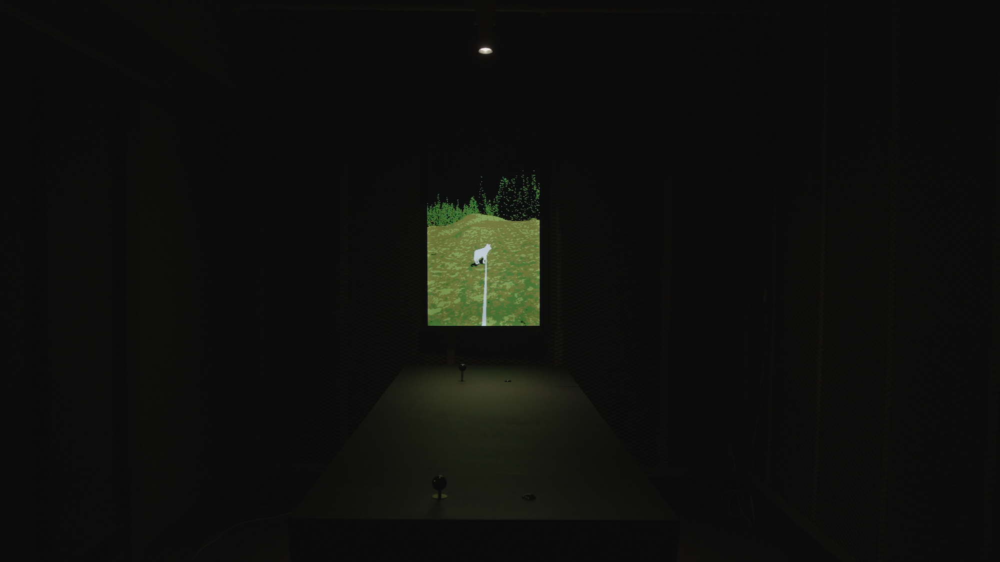
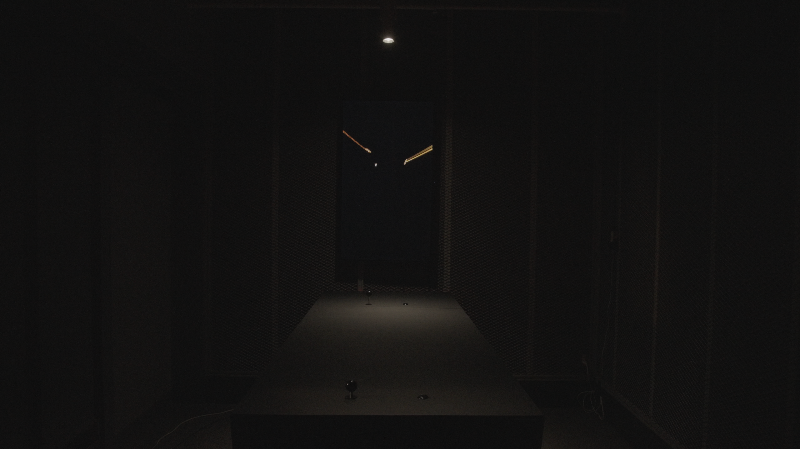
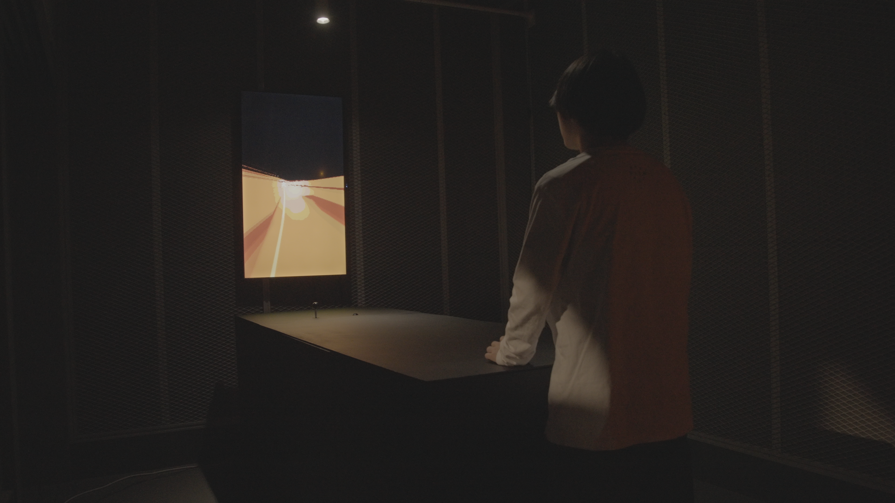

引きこもりの私は、空に銃口を向けたまま
I, a Hikikomori, Still Point My Gun at the Sky




前進するNPCに牽引されながら進行するビデオゲームインスタレーション作品。プレイヤーが操作するアーケードスティックとは別に、前を歩くNPCの動きに連動して自動で動くアーケードスティックが設置されている。 ゲーム内でプレイヤーは、常に何かに引かれるかたちで移動し続ける。牽引する対象はシーンごとに変化し、ロボット掃除機や犬、ラジコン、兵士といった存在が次々と入れ替わっていくが、プレイヤー自身が進行を選択することはない。許されている操作は、視点を動かして世界を見渡すことと、酒を飲むという行為のみであり、出来事はプレイヤーとは無関係に進行していく。プレイヤーはゲームの内部に存在しながらも、行為の主体としては機能しない位置に留め置かれる。 物語の終盤、プレイヤーは前方を進むNPCに引きずられるようにして、空を飛ぶ鳥へ銃口を向ける。しかしその行為は達成感や解放感を伴うものではなく、回避不能な出来事として静かに通過していく。本作は、操作と主体の関係が崩れていく過程をゲーム体験として提示する。